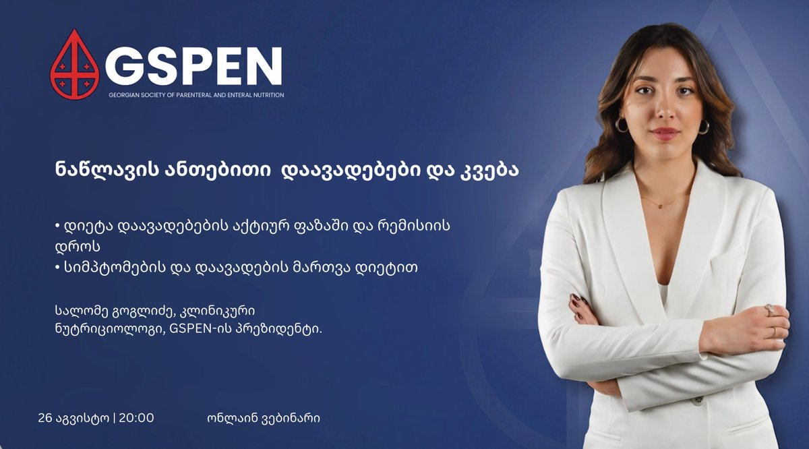

ვმუშაობთ იმისთვის, რომ ყველამ მიიღოს დროული, უსაფრთხო და შესაბამისი ნუტრიციული დახმარება.
შემოგვიერთდი პროფესიულ საზოგადოებაში და მიიღე წვდომა ვებინარებზე, რესურსებზე და ღონისძიებებზე.
GSPEN იწყებს ეროვნულ კვლევას მალნუტრიციის გავრცელების შესაფასებლად. გაიგე, როგორ მიიღო მონაწილეობა და გახდე ავტორი →

ვებინარისალომე გოგლიძე, კლინიკური ნუტრიციოლოგი — დარეგისტრირდი და მიიღე შეხვედრის ბმული →
კლინიკური კვების ეროვნული ასოციაცია — მისია, პრინციპები და მმართველობითი ორგანო →